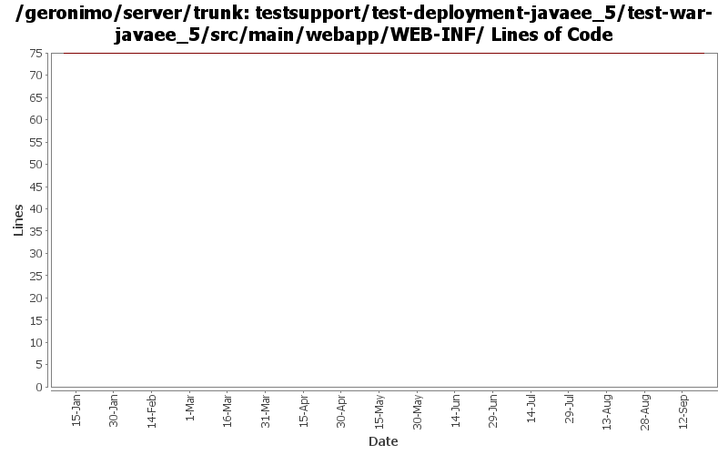

[root]/testsupport/test-deployment-javaee_5/test-war-javaee_5/src/main/webapp/WEB-INF

| Author | Changes | Lines of Code | Lines per Change |
|---|---|---|---|
| Totals | 5 (100.0%) | 1 (100.0%) | 0.2 |
| vamsic007 | 1 (20.0%) | 1 (100.0%) | 1.0 |
| djencks | 2 (40.0%) | 0 (0.0%) | 0.0 |
| akulshreshtha | 2 (40.0%) | 0 (0.0%) | 0.0 |
GERONIMO-2964 Cannot specify the Tomcat work directory for a web application
o Renamed the schemas that changed
1 lines of code changed in 1 file:
GERONIMO-2286 GERONIMO-1874 GERONIMO-3140 Adjust schema versions for schemas importing new schema versions
0 lines of code changed in 2 files:
GERONIMO-2716 Create test war/rar/ear/jar files with javaee namespace for j2ee-builder tests
0 lines of code changed in 2 files: